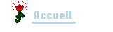
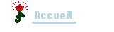

Programme code en C# en POO sur Visual Studio 2019 Avec
L'Editeur 3D Unity et des Asset importé de Asset Store
Une nouvelle Perce-Neige
Ce projet Unity est le premier de ma creation,
ca a ete la premiere fois que j'ai touche aux outils
de creation du terrain. il etait demande de creer
un environnement simple et le premier paysage qui
m'est venue etait un paysage enneige et ça a ete
vraiment un plaisir de voir la progression.
Une vie sous ses Flocon !
Pour creer un environnement original, j'ai du allez
chercher des assets gratuits moi-meme sur internet et
les plusieurs stores. J'ai donc du m'adapter aux assets
que je trouvais et aux textures a leur applique pour
donner un effet de neige sur les toits des maisons
ainsi que sur les arbres.
Les Corbeau croasse cet Histoire
Pour mon premier programme j'ai code un systeme de Boids
separe en un Boids Manager et un code pour les Boid
en eux-memes, ils ont pour objectif de virevolte autour
d'un certain point de ce donnant des targets differentes
(en haut du manoir ou au-dessus de la foret),
une fois qu'ils ont termine de virevolter,
ils doivent
se rendre a la prochaine destination
(ou au manoir ou a la foret) et ensuite s'y poser
puis reprendre la boucle, cela est gere avec des variables
bools qui vont definir chaque etape, l'etape a faire est
true les autres en false
et il se succede à la fin d'un timer.

Conclusion
Ce projet est le premier projet Unity demandé pour ma formation du CNAM ENJMIN, ça a été un projet réalisé sur 8 jours où je ne pouvais travailler que 4H par jour environ. ce projet est très susceptible de subir des ajouts et des changements, il est prévu de faire une vus FPS pour mieux voir les détails de la map et les boid, ainsi qu'un changement du ciel et des lumières. Le projet m'a appris énormément de choses sur l'utilisation d'un éditeur, j'étais rapidement familiarisé avec les éditeurs ayant touché à RPG MAKER, mais l'apprentissage d'Unity et les notions
 
